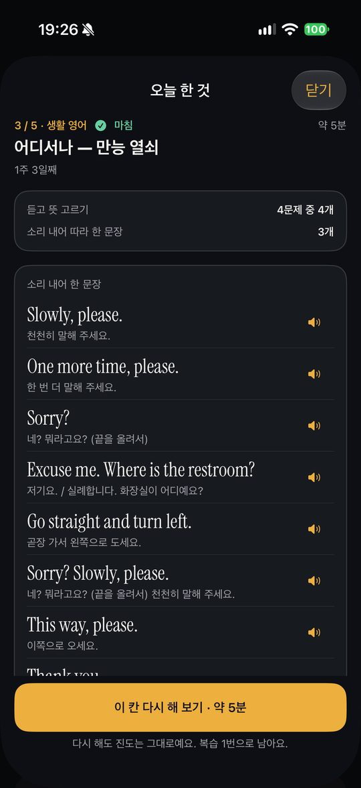
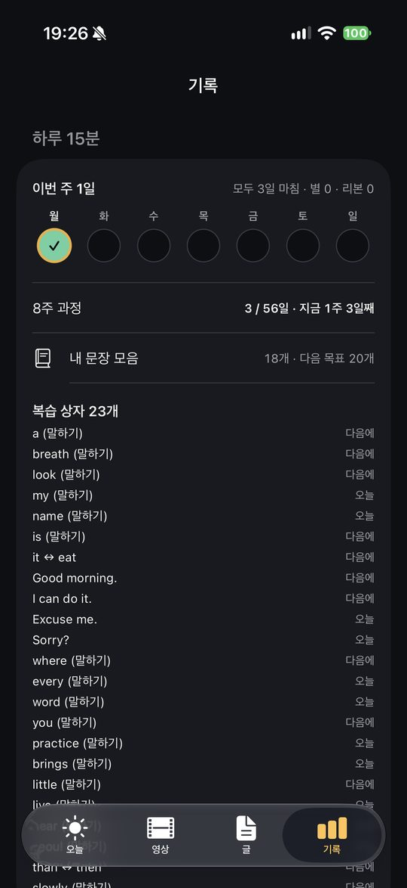
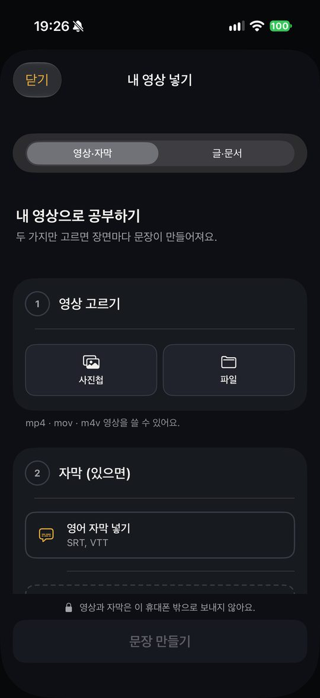
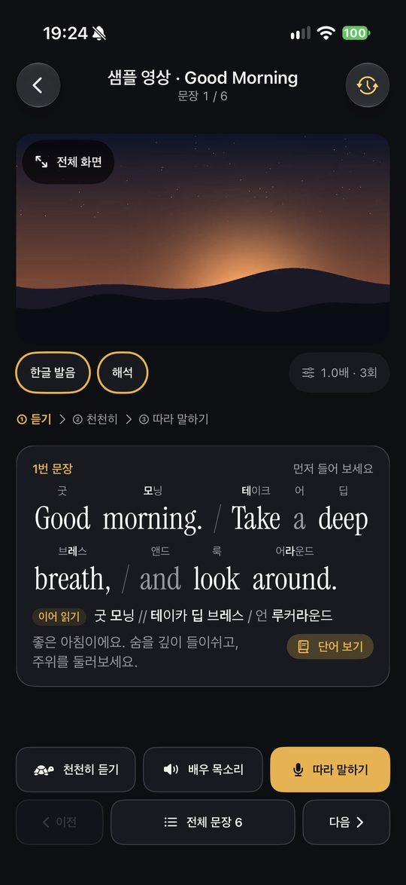
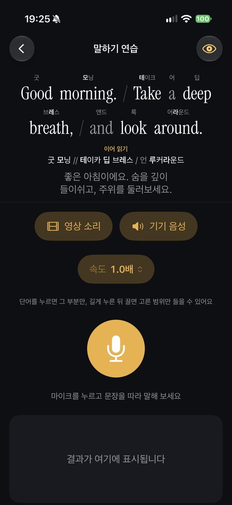
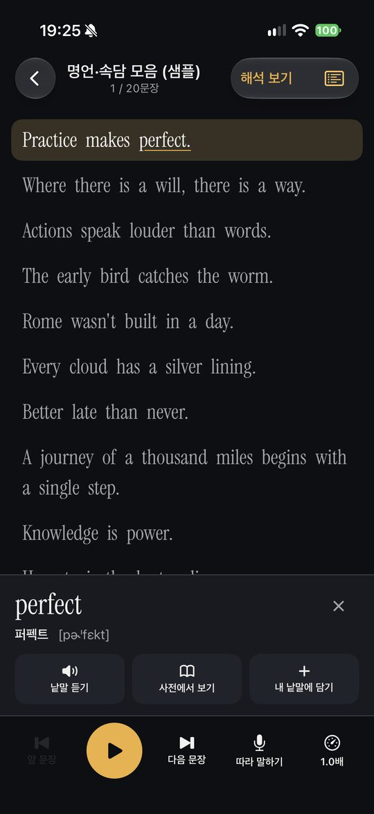

씬톡 SceneTalk
1. 처음 켜기
- 처음 켜면 공부할 길을 고릅니다.
- 시작할 곳(영어가 처음인지, 짧은 대화는 되는지)과 공부 알림 시간을 고릅니다. 알림은 고르지 않아도 됩니다.
- 사진 사용법을 본 뒤 아래 메뉴 오늘 · 영상 · 글 · 기록 네 칸이 나옵니다.
2. 오늘 15분
「오늘」 칸에서 시작을 누르면 다섯 칸을 차례로 합니다. 모두 약 15~20분이고, 8주를 한 바퀴로 이어집니다.


3. 내 영상으로 공부하기
- 「영상」 칸 오른쪽 위 +를 누릅니다.
- 영상 고르기: 사진첩 또는 파일 앱에서 영상(mp4 · mov · m4v)을 고릅니다.
- 자막: 영어 자막(SRT · VTT)을 넣습니다. 한국어 자막은 있으면 함께 넣습니다.
- 문장 만들기를 누르면 자막 시간대로 장면이 나뉩니다.
- 문장을 누르면 그 장면만 정한 횟수만큼 되풀이합니다. 빠르기는 0.3~2.0배입니다.
- 낱말을 누르면 그 낱말부터 끊어 읽는 곳까지 다시 들려줍니다.
- 자막과 소리가 어긋나면 앱이 영상 소리에 맞춰 시간을 저절로 고쳐 봅니다.


4. 따라 말하기
문장 옆 마이크를 누르고 따라 말하면, 아이폰이 알아들은 말을 원문과 낱말마다 비교합니다.
- 초록: 맞음
- 주황: 그 자리에서 다른 소리로 들림
- 빨강: 빠졌거나 들리지 않음

5. 영문 글 읽기
「글」 칸에서 영어 글(txt · pdf · docx · rtf 또는 붙여 넣기)을 넣으면 문장마다 아이폰 음성으로 읽어 줍니다. 낱말을 누르면 한글 발음과 발음기호를 보여 줍니다.

자주 묻는 질문
말하기 연습이 소리를 못 알아들어요.
아이폰 설정 → 씬톡에서 마이크와 음성 인식을 켜 주세요. 조용한 곳에서 휴대폰을 입에 가까이 두면 더 잘 알아듣습니다.
자막이 영상과 맞지 않아요.
자막 파일이 그 영상과 같은 판인지 확인해 주세요. 학습 화면 메뉴의 「자막 시간 직접 맞추기」로 손볼 수 있습니다.
단어 뜻이 나오지 않아요.
단어 뜻은 Apple Intelligence 를 지원하고 켜 둔 기기에서만 나옵니다. 그 밖의 기기에서는 낱말과 발음기호만 보입니다.
더 자연스러운 목소리로 듣고 싶어요.
아이폰 설정 → 손쉬운 사용 → 읽기 및 말하기 → 음성 → 영어에서 「(고품질)」·「(프리미엄)」 음성을 받은 뒤, 씬톡 설정 → 읽어 주는 목소리에서 고릅니다.
처음부터 다시 하고 싶어요.
설정 맨 아래 「처음 상태로 되돌리기」를 누릅니다. 불러온 영상과 공부 기록이 모두 지워집니다.
내 정보는 어디에 저장되나요?
모두 이 아이폰에만 있습니다. 회원 가입이 없고 개발자 서버로 보내는 정보가 없습니다. 자세한 내용은 개인정보 처리방침을 참고해 주세요.
문의
사용 중 문제나 제안은 이메일로 보내 주세요.
nomin1fi@gmail.com